Explore Sri Lanka
from Kottawa
LP Residence puts you in a perfect position to discover the best of Sri Lanka — from ancient temples and colonial cities to tropical beaches and lush hill country.
Around Kottawa & Colombo
These popular spots are easy day trips or short rides from LP Residence.
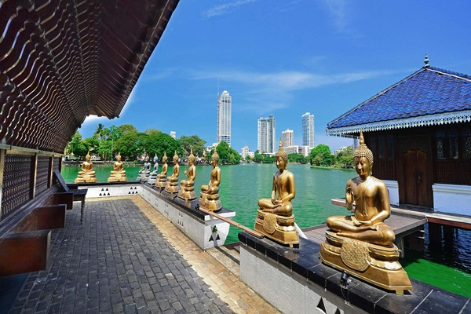
One of Colombo's most important and eclectic temples, with a fascinating museum, reclining Buddha and beautiful lakeside setting.
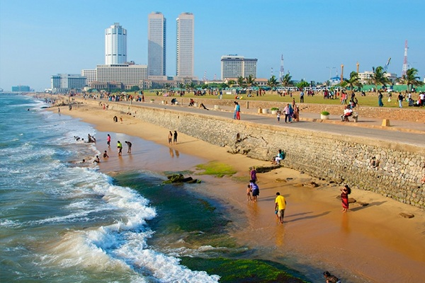
Colombo's famous oceanside promenade — perfect for an evening stroll, street food and stunning Indian Ocean sunsets.
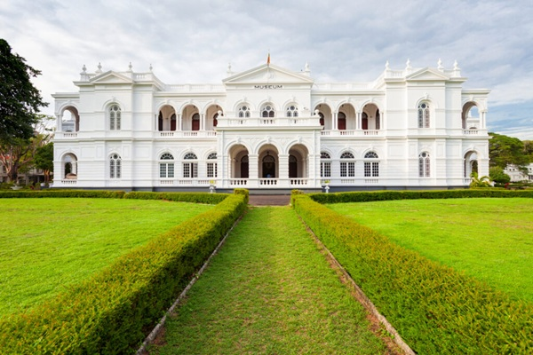
Sri Lanka's premier museum, with artefacts from ancient kingdoms, royal regalia and a rich collection of historical Sri Lankan art.
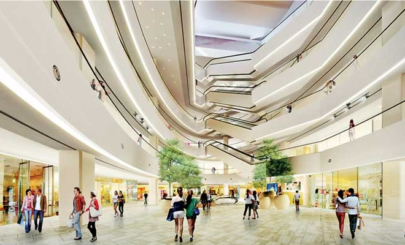
Situated opposite Galle Face Green, One Galle Face Mall is part of a world-class mixed-use complex by Shangri‑La, featuring residential towers, an office building, a hotel, and Sri Lanka’s largest international retail experience
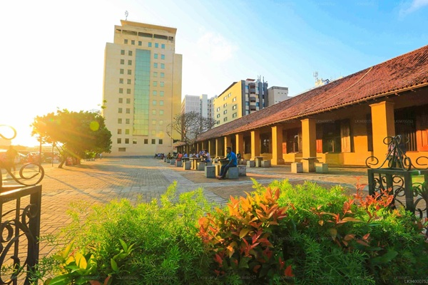
Colombo's colonial Dutch Hospital is now a chic restaurant and shopping precinct. Nearby Pettah is a buzzing market for spices and local goods.
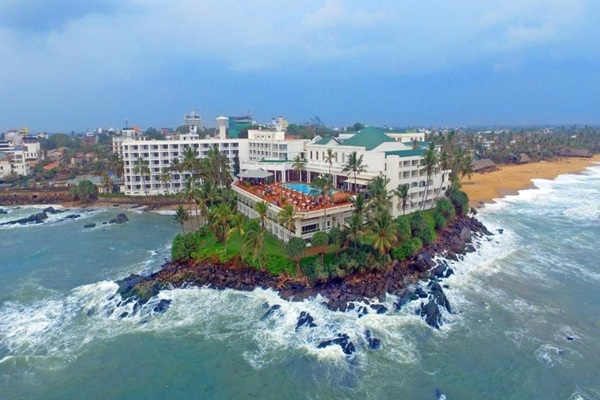
Colombo's closest beach resort town, with a beautiful sandy beach, seafood restaurants and the iconic colonial Mount Lavinia Hotel.
Sri Lanka's stunning south coast
The Southern Expressway entrance is minutes from LP Residence — making south coast beaches and towns very accessible.
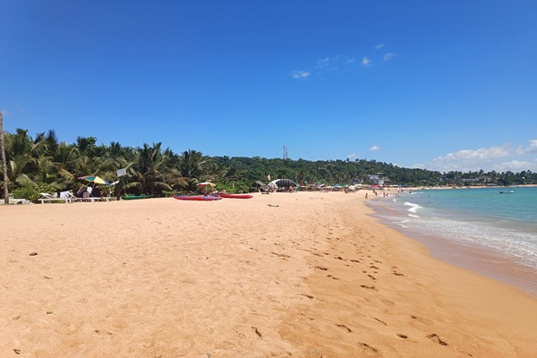
One of Sri Lanka's most beautiful beaches — a curved bay of golden sand with calm turquoise water, coral reef snorkelling and beachfront restaurants.
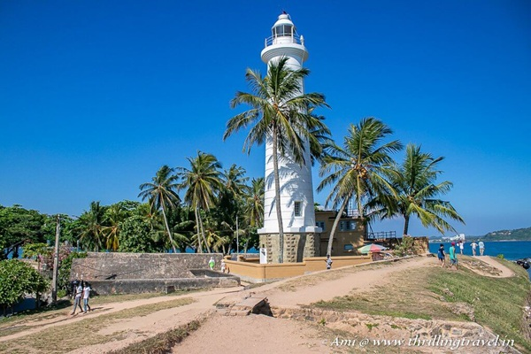
A UNESCO World Heritage Site — a 17th‑century Dutch colonial fort with cobblestone streets, boutique shops, cafés and breathtaking ocean views.
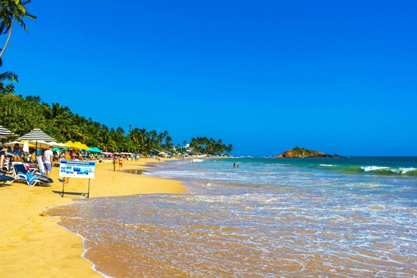
Mirissa is a laid‑back beach town famous for world‑class blue whale watching from November to April, plus surfing and fresh seafood.
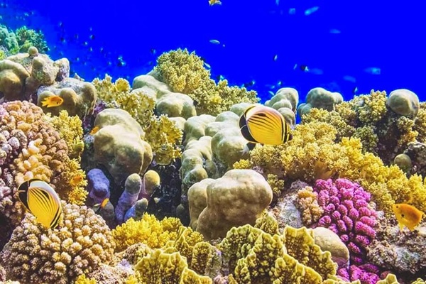
Coral Gardens Hikkaduwa, located along the southwestern coast of Sri Lanka, is a mesmerizing underwater world that beckons snorkelers, divers, and ocean enthusiasts. This thriving coral reef ecosystem is renowned for its vibrant marine life, making it a must-visit destination for those seeking a remarkable aquatic adventure.
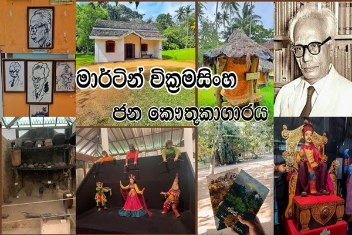
The house in which Martin Wickramasinghe was born has inspired the Trust to established a Folk Museum Complex, surrounded by a restored ecosystem planted with hundreds of varieties of indigenous trees and shrubs in which bird life abounds.
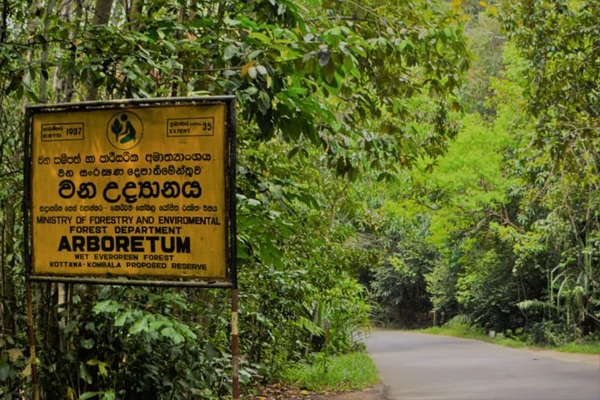
A rare lowland rainforest right in Kottawa down south — home to endemic birds, monitor lizards and giant trees. Perfect for a peaceful tour of nature.
Ancient cities & hill country
Sri Lanka's cultural and natural wonders are all within reach as a longer day trip or overnight stay.
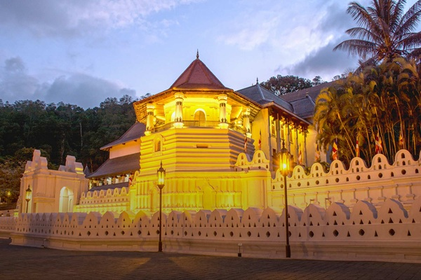
Sri Lanka's most sacred Buddhist temple, housing a relic of the Buddha's tooth. Set beside Kandy Lake in a picturesque hill city.
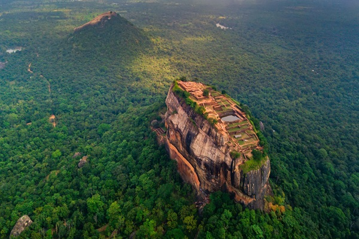
An iconic ancient rock fortress rising 200m from the jungle — with remarkable 5th‑century frescoes, water gardens and panoramic views from the summit.
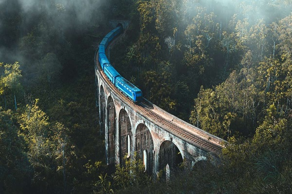
Ella is a magical hill town surrounded by tea plantations and misty mountains. The Nine Arch Bridge is one of Sri Lanka's most photographed landmarks.
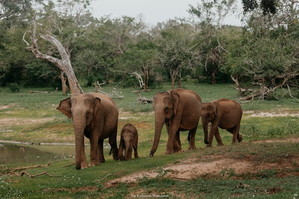
Sri Lanka's most visited national park, with one of the world's highest densities of leopards, plus elephants, sloth bears and crocodiles.
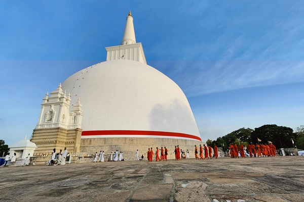
One of the ancient capitals of Sri Lanka, with towering dagobas, sacred Bo tree and sprawling ruins dating back 2,000+ years.
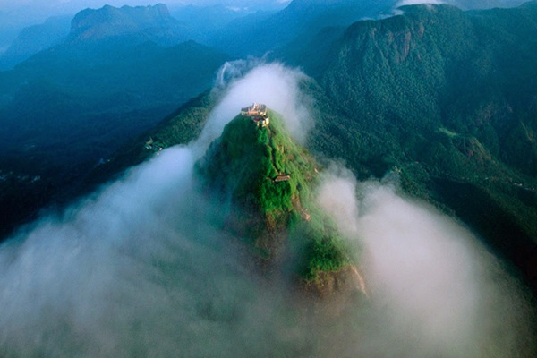
A sacred pilgrimage mountain climbed by people of all faiths. The pre‑dawn climb rewards trekkers with a spectacular sunrise above the clouds.
Getting around from Kottawa
Private car hire
A private car with driver is the most flexible way to explore Sri Lanka. Your host can arrange trusted drivers at reasonable rates.
Expressway & bus
The Southern Expressway entrance is just minutes from LP Residence, making bus and coach travel to Galle and the south very fast.
Scenic train routes
Sri Lanka's train network connects to Kandy, Ella and the hill country. The Colombo–Ella route is one of the world's most scenic rail journeys.
Airport transfers
LP Residence can arrange pickup and drop‑off at Bandaranaike International Airport (BIA, CMB) — just let your host know in advance.
Local SIM card
Pick up a Dialog or Mobitel SIM at the airport or in Colombo for affordable mobile data — very useful for maps and ride‑hailing apps.
Ask your hosts
Your LP Residence hosts have local knowledge built over many years. Ask them for tips, restaurant recommendations and the best hidden gems.
Book LP Residence as your base
Rooms from USD 20/night. Free parking, Wi‑Fi and warm Sri Lankan hospitality included.